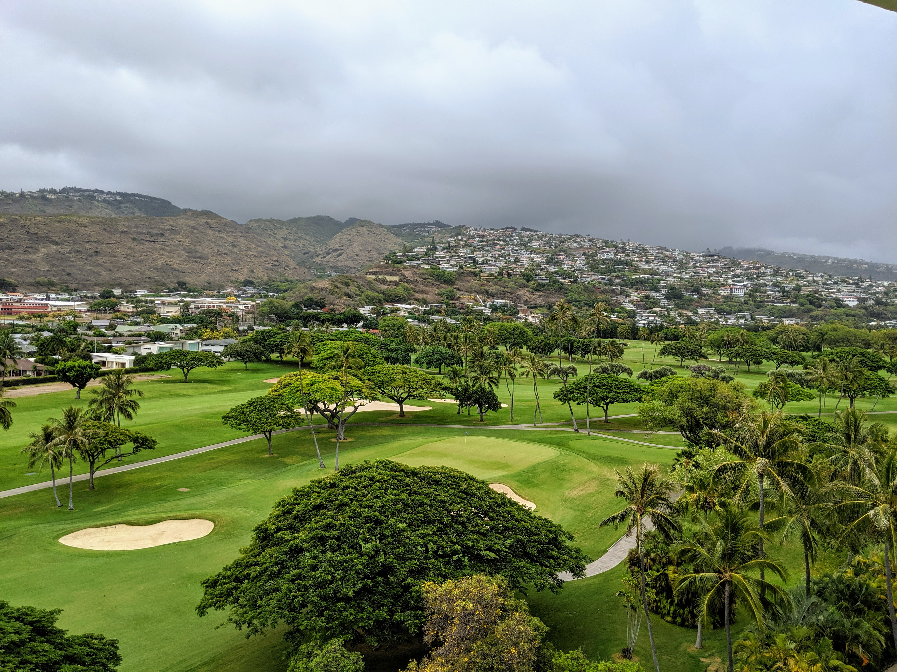
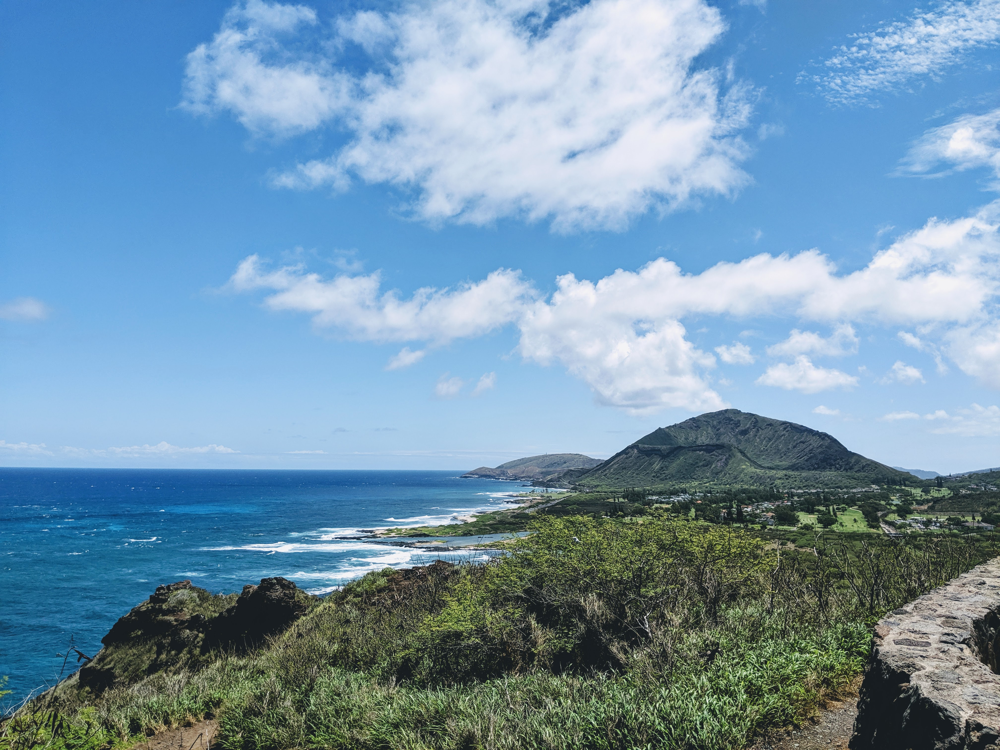
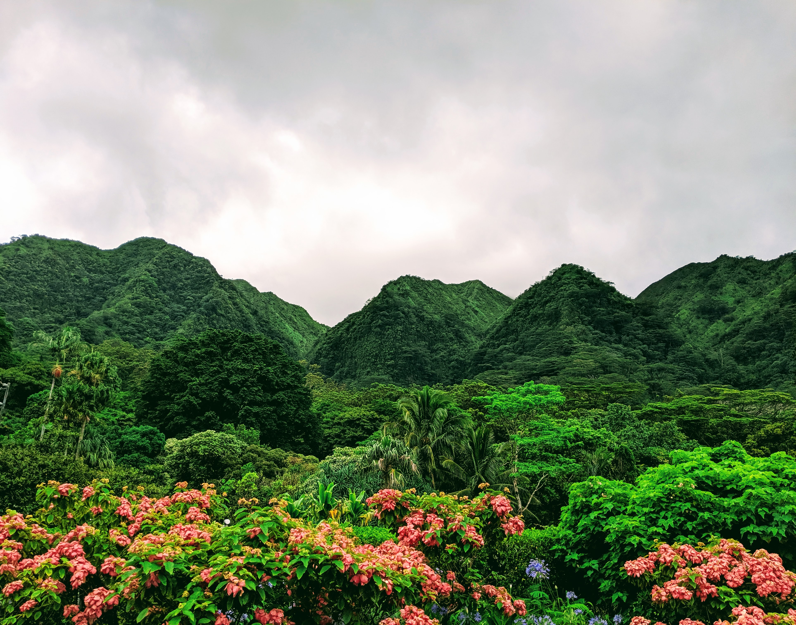

Landing Page Project
This is a simple landing page project for The Odin Project, linked in the top right. All contents were random things that came to mind while putting together this page.
A few photos from my trip to Oahu in the summer of 2019

The view from our room in The Kahala Hotel & Resort.

A random shed among the greenery at the Mānoa Falls trail.

A view of the Koko Crater from the Makapu'u Point Lighthouse Trailhead.

An overcast day at Lyon Arboretum.
"Can I offer you a nice egg in this trying time?"
- Frank Reynolds
- Frank Reynolds